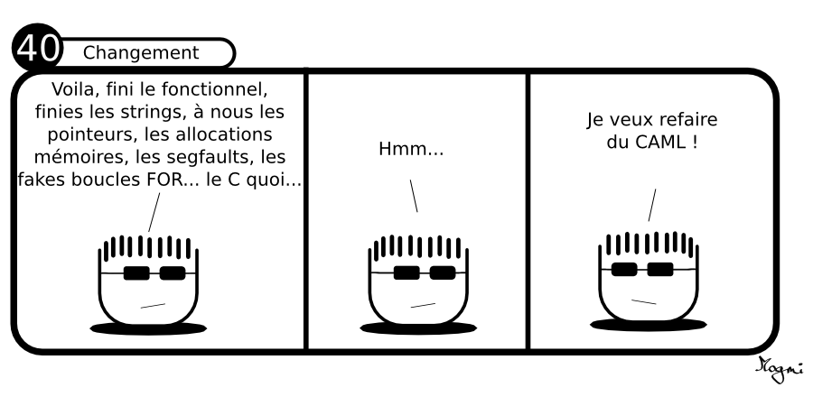

C6 OCaml : aspects fonctionnels ¶
"An industrial-strength functional programming language with an emphasis on expressiveness and safety"
(Site officiel d'OCaml)
Cours¶
Attention
Ce diaporama ne vous donne que quelques points de repères lors de vos révisions. Il devrait être complété par la relecture attentive de vos propres notes de cours et par une révision approfondie des exercices.
Travaux dirigés¶
Travaux pratiques¶
 Exercice 1 : Un notebook pour démarrer¶
Exercice 1 : Un notebook pour démarrer¶
A propos des notebooks
Dans cette activité, on utilise pour la première fois les jupyter notebook, c'est-à-dire des documents contenant à la fois :
- des zones de texte explicatives,
- des zones de code Ocaml, executables directement à la façon de ce qui se passe lorsqu'on utilise l'environnement
utopde OCaml.
A chaque fois, que nous utilisons cet outil, deux choix s'offrent à vous :
-
l'utiliser localement sur votre ordinateur à condition d'y avoir installé jupyter notebook (c'est le cas sur les ordinateurs de la salle). Pour cela, créer un dossier nommé par exemple
L'application se lance dans votre navigateur, télécharger le notebook et utiliser le bouton Téléverser en haut à droit pour le télécharger dans votre dossier et l'ouvrir.Notebooket depuis un terminal lancer jupyter dans ce dossier en écrivant simplement : -
Utiliser l'application Capytale de votre environnement numérique de travail metice. Dans ce cas, utiliser le lien de partage fourni dans l'activité. Cette option vous permet notamment de travailler depuis la maison car aucune installation (ni de OCaml, ni de Jupyter) n'est nécessaire.
Les activités utilisant un notebook proposerons donc toujours les deux options décrites ci-dessus.
- Télécharger le notebook pour l'utiliser en local (installation de jupyter nécessaire)Notebook : Premiers pas en OCaml
- Utiliser l'application Capytale (aucune installation nécessaire)

Exercice 2 : Quelques évaluations¶
-
Prédire le type et la valeur des expressions suivantes, vérifier en les évaluant dans
utop:(7.-5.) *. 3.14 mod 3(6+6)/25/2'a'"Ocaml""Hello" ^ " World"3.0 ** 29 < 87 <> 5"Incroyable".[5]
-
Effectuer les calcul suivants à l'aide d'Ocaml :
- Reste dans la division euclidienne de 2023 par 312
- Quotient dans la division euclidienne de 7777 par 42
- \(7^4\)
- \(\dfrac{14 + 9}{25-3\times7}\)
Exercice 3 : Quelques erreurs ...¶
-
Prédire l'évaluation de chacune des expressions ci-dessous
let a = 5. + 2if true then 1 else 2.0let b = -3.14'z' = "z"let s = "Python" in s.[0] = 'C'abs(-2.718)let z = 2.0**5let s = "OCaml" in if s.[1]="C" then true else false
-
Vérifier en testant dans
utop(et expliquer)
Note
Pour les exercices suivants, on pourra au choix continuer à travailler dans utop soit faire les premières compilations.
Exercice 4 : Ou exclusif¶
-
Ecrire une fonction
xoren OCaml qui prend en argument deux booléensaetbet renvoietruelorsque l'un des deux est vrai etfalsesinon -
Donner une écriture de cette fonction en utilisant un filtrage par motif
Exercice 5 : Quelques fonctions élémentaires¶
-
Ecrire une fonction
perimetre_cercle : float -> floatqui prend en argument un flottantret renvoie le perimètre du cercle de rayonr, on utilisera une valeur depide3.14définie dans un environnement local. -
Ecrire une fonction
discriminant : float -> float -> float -> floatqui prend en argument trois flottants \(a, b\) et \(c\) et renvoie \(b^2 - 4ac\). -
Ecrire une fonction
est_pair : int -> boolqui renvoietruelorsque l'entier donné en argument est pair. -
Ecrire une fonction
mention : float -> stringqui renvoie la mention au bac associée à la moyenne donnée en argument par exemplemention 12.8donne "Assez-bien". -
Ecrire une fonction
fact : int -> intqui renvoie la factorielle de l'entier donné en argument.
Exercice 6 : Termes d'une suite¶
Ecrire une fonctions suite qui prend en argument un entier n et renvoie le n-ième terme de la suite \(u\) définie par \(u_0=1\) et \(u_{n+1} = 2 u_n + 3\)
Exercice 7 : Dessiner (sans boucles)¶
-
Ecrire une fonction
repetequi prend en argument un caractèrecaret un entiernet affichenfois ce caractère à l'écran puis passe à la ligne -
En utilisant la fonction précédente écrire la fonction
trianglequi prend en argument un caractèrecaret un entiernet dessine un triangle de ce caractère. Par exemple : -
Même question mais en affichant le triangle "pointe vers le haut" :
Exercice 8 : Type figure¶
On considère le type union suivant permet de représenter des figures géoémtriques :
-
En utilisant une correspondance de motif, écrire une fonction
perimetrequi renvoie le perimetre d'unefigure -
Définir la variable
rectreprésentant un rectangle de dimension \(3\times9\) et calculer son aire à l'aide de la fonction précédente. -
Reprendre les questions précédentes pour l'aire.
Exercice 9 : Type nombre¶
- Créer le type union
nombrepouvant être un entier ou un flottant - A l'aide d'un filtrage par motif, écrire une fonction
additionqui prend en argument deux variables de typenombreet renvoie leur somme.
Exercice 10 : Type couleur¶
- Créer le type produit
couleursous la forme d'un triplet de trois entiers. - Le négatif d'une couleur \((x,y,z)\) est la couleur \((255-x, 255-y, 255-z)\). Ecrire une fonction prenant une couleur comme paramètre et renvoyant son négatif.
-
A l'aide d'un filtrage par motif écrire une fonction qui affiche :
Rouge pursi la composante rouge est strictement positive et les deux autres composantes sont nulles,Vert pursi la composante verte est strictement positive et les deux autres composantes sont nulles,Bleu pursi la composante bleue est strictement positive et les deux autres composantes sont nulles,Mélangedans les autres cas.
Exercice 11 : Chaines de caractères¶
Aide
- On rappelle que le caractère d'indice
ide la chainechaines'obtient avec la notationchaine.[i] - La fonction
String.subprend en argument une chaine et deux indices et renvoie la sous chaine entre ces deux indices. Par exempleString.sub "OCaml" 1 3renvoir"Cam".
- Ecrire une fonction
est_dansqui prend en argument une chaine de caractèreschaineet un caractèrecaret renvoietruesicarse trouve danschaineetfalsesinon - Ecrire une fonction
compte_occurencequi prend en argument une chaine de caractèreschaineet un caractèrecaret renvoie le nombre d'apparition decardanschaine
Exercice 12 : Création de liste¶
- Ecrire une fonction
cree_listequi prend en argument un élémenteltet un entierrepet qui crée la liste constituée derepfois l'élémentelt. Par exemplecree_liste 42 3renvoie la liste[42; 42; 42] - Ecrire la fonction
entiersqui prend en argument un entiernet renvoie la liste des entiers[1,2,..,n]. Par exempleentiers 5renvoie[1; 2; 3; 4; 5]. - Ecrire une fonction
doublequi prend en argument une liste et renvoie la liste dans laquelle chaque élément dela été dupliqué. Par exempledouble [3; 6; 7]renvoie la liste[3; 3; 6; 6; 7; 7;]. - Ecrire la fonction
mult_listequi prend en argument une liste et un entierrepet qui crée la liste constituée dereprépétitions de la liste. Par exemplemult_liste [1; 4; 2] 3renvoie la liste[1; 4; 2; 1; 4; 2; 1; 4; 2]
Exercice 13 : Somme, moyenne, maximum, minimum¶
-
Ecrire une fonction
somme_intqui prend en argument une liste d'entiers et renvoie la somme de ces entiers. -
Ecrire une fonction
moyenne_floatqui prend en argument une liste non vide de flottants et renvoie leur moyenne. -
Ecrire une fonction
minimumqui renvoie le minimum de la liste non vide de nombres donnée en argument. -
Ecrire une fonction
indice_maxqui renvoie la liste des indices des occurrences du maximum des éléments de la liste (non vide) donnée en argument.
Exercice 14 : Indice d'un element¶
Ecrire une fonction indice qui prend en argument un entier n et une liste d'entiers l et qui renvoie l'indice de la première occurrence de n dans l. On renvoie -1 si n n'appartient pas à l. Par exemples :
indice 3 [1; 6; 7; 2; 3; 0]renvoie4indice 1 [1; 6; 7; 2; 3; 0]renvoie0indice 5 [1; 6; 7; 2; 3; 0]renvoie-1
Exercice 15 : Suppression d'un élément¶
- Ecrire une fonction
supprimequi prend en argument une listelet une valeurvet supprime toutes les occurrences devdansl. - Même question en supprimant seulement la première occurrence
- Même question en supprimant seulement la dernière occurrence
Exercice 16 : Retourner une liste¶
Ecrire une fonction retourne qui prend en argument une liste et renvoie la liste retournée (c'est-à-dire avec les éléments dans l'ordre inverse). Par exemple retourne [2; 4; 5; 1] renvoie la liste [1; 5; 4; 2]
Remarque
Cette fonction existe déjà, c'est List.rev
Exercice 17 : Doublons dans une liste¶
-
Ecrire une fonction
sans_doublons_trieequi prend en argument une liste d'entiers triée et renvoietruesi cette liste ne contient pas de doublons. Par exemplesans_doublons_triee [2; 5; 5; 8; 10]doit renvoyerfalse. -
Ecrire une fonction
elimine_doublons_trieequi prend en argument une liste d'entiers triée et renvoie cette liste en supprimant tous les doublons éventuels qui s'y trouvent. Par exempleelimine_doublons_triee [2; 5; 5; 8; 10]doit renvoyer[2; 5; 8; 10] -
Ecrire une fonction
comparequi prend en argument deux entiersaetbet renvoie-1sia<b,0sia=bet1sia>b -
Une fonction de tri de liste existe déjà en OCaml, c'est
List.sortqui prend en argument une fonction de comparaison (telle que celle définie à la question précédente) et une liste et renvoie la liste triée en utilisant la fonction de comparaison. Tester cette fonction. -
Ecrire les fonctions des questions 1 et 2 pour des listes quelconques (non forcément triées) en utilisant
List.sort -
Même question sans utiliser
List.sort
Exercice 18 : Liste monotone¶
Ecrire une fonction monotone qui prend en argument une liste et renvoie un booléen indiquant si la liste donnée en argument est monotone ou non.
Aide
On pourra dans un premier temps écrire deux fonctions croissante et décroissante avant de trouver une solution plus concise.
Exercice 19 : Partition suivant un prédicat¶
-
Ecrire une fonction
separequi prend en argument une liste et renvoie deux listes : celles des éléments positifs ou nuls et celle des éléments négatifs. Par exemplesepare [2; -3; -2; -1; 7; -4]renvoie les liste[2; 7]et[-3; -2; -4]. -
En s'inspirant de l'exemple précédent écrire une fonction
separe_bisqui prend de plus en argument une fonction qui renvoie un booléen (et s'applique aux éléments de la liste) et renvoie deux listes : celles pour laquelle l'application de la fonction renvoietrueet celle pour laquelle l'application de la fonction renvoiefalse.
Exercice 20 : Exercices en ligne¶
-
Le site officiel de la fondation Ocaml, propose des exercices progressifs à faire en ligne directement dans le navigateur.
-
Des Exercices OCaml, interactifs et corrigés par Q. Fortier.
Humour d'informaticien¶
 Credit : Hmm-la-bd cc by-nc